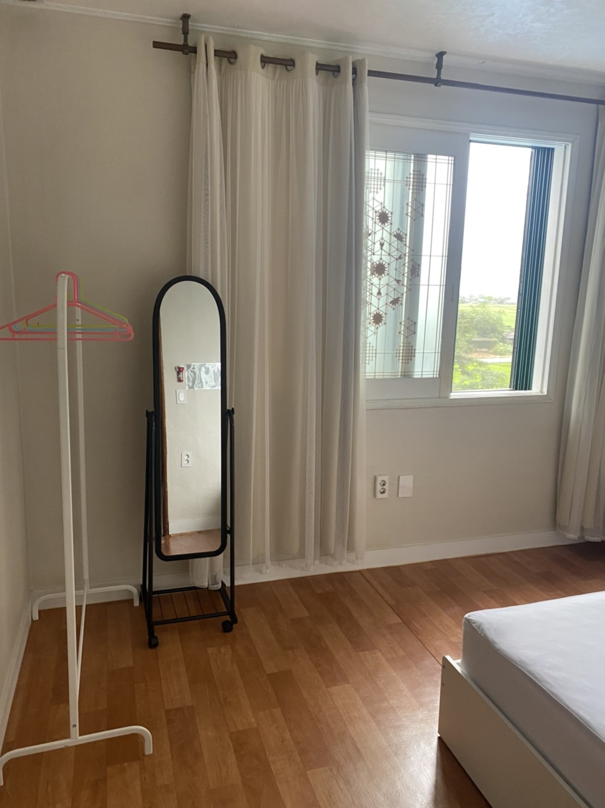

상세보기
-
]

- 
강원도 양양군
- 세부유형 귀촌형
- 신청기간2022.09.13~2022.09.30
- 운영기간2022.09.19~2022.12.18
- 모집인원11명
- 시군정보
- 교육 프로그램
지리적 특징
양양군은 강원도 동쪽에 위치하고 있으며 위로는 속초와 아래로 강릉을 접하고 있으며 태백산맥 동쪽에 위치하고 있어 동해바다의 난류 영향으로 여름에 시원하고 겨울에 따뜻한 기후를 가지고 있고 수도권에서 가장 가까운 바다를 접하고 있는 지역임
주요 농특산물
쌀, 산채, 표고버섯, 느타리 버섯, 감, 배, 복숭아, 토종꿀, 한우
귀농 추천품목
표고버섯, 산나물
대표 브랜드
동철감, 낙산배, 산양산삼, 해뜨미쌀, 양양토종꿀
총 면적
630.09㎢(임야 83.41%,농지 8%)
총인구
27,856(2022년 7월 기준)
귀농귀촌 수
(귀농/귀촌)43명/25가구 (`21년 기준)
지원 사업
| 지원 사업 | 지원 내용 | 비고 |
|---|---|---|
| 귀농귀촌인 주택설계비 지원 | 주택 신축시 설계비 지원 | 주택설계비 50%(최대 100만원) 보조 |
| 귀농귀촌인 주건환경개선사업 | 주택수리비 지원 | 주택수리비 최대 1,000만원 보조 |
| 귀농귀촌인 이사비용 지원사업 | 이사비용 지원 | 이사비 50%(최대 100만원) 보조 |
| 청년농업인 창업기반구축 지원사업 | 생산·유통, 제조가공, 체험관광, 브랜드개발, 마케팅 등 | 도비 24%, 시군비 56%, 자부담 20%(성적별 상이 지원) |
| 귀농 창업자금 및 주택자금 융자지원 | 농업기반시설 조성 및 주택 구입·수리 | |
| 귀농창업 지원 | 귀농 창업자금 지원 | |
| 선도농가 현장실습 지원 | 초기 영농기술 습득 | |
| 귀농인 주거환경개선 지원 | 주택 본체 내외부 수리 | 가구당 500만원 한도 |
| 귀농귀촌 체험학교 운영 | 귀농귀촌인 정착에 필요한 기술 및 정보제공 |
프로그램 (귀농형)
비고사항
세부 프로그램
좌우 스크롤로 콘텐츠를 확인할 수 있습니다.
| 일정 | 분류 | 프로그램 내용 | 시간 | 비고 | |
|---|---|---|---|---|---|
| 10. 8(토) | 사전워크숍 |
|
6H | ||
| 10. 8(토) ~ 11. 13(일) | 출발지 자율적 커뮤니티 활동 1. |
|
20H이상 (출발지 자율적 커뮤니티활동 1,2 합산) |
||
| 대상시군 커뮤니티 활동 |
|
20H 내외 (당일 또는 1박2일) |
|||
| 출발지 자율적 커뮤니티 활동 2. |
|
20H 이상 (출발지 자율적 커뮤니티활동 1,2 합산) |
|||
| 11월 4주 | 성과공유대회 |
|
6H | ||
| 12월 이후 | 후속 커뮤니티 활동 | 귀촌형 |
|
- | |